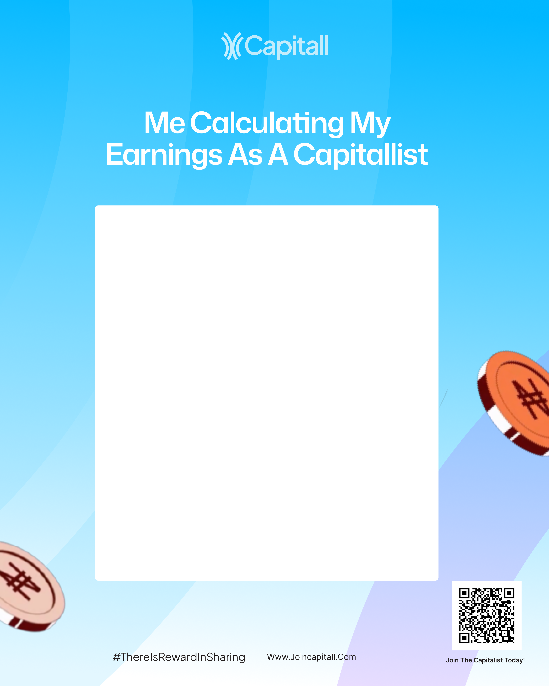
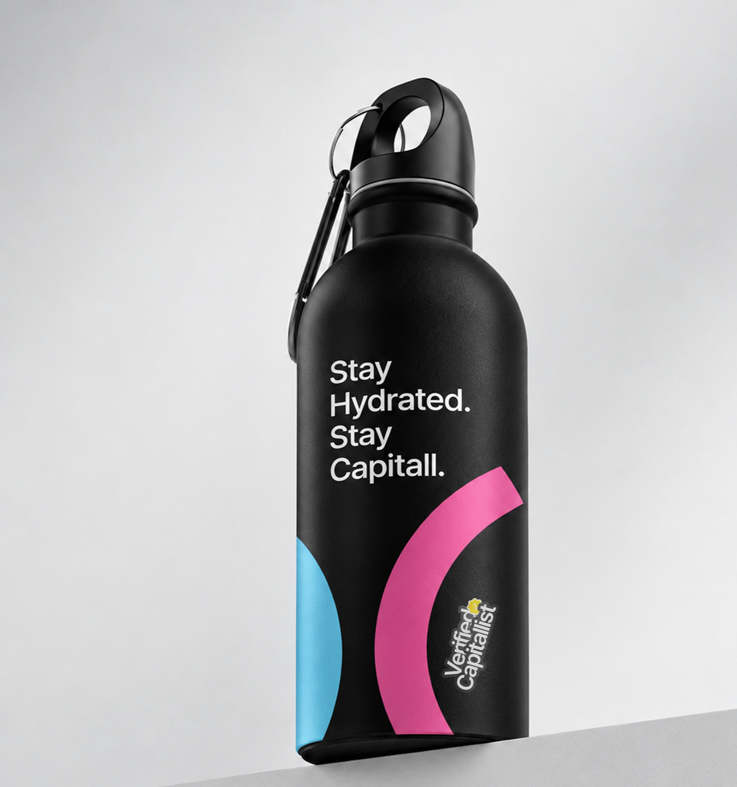

What if word-of-mouth wasn't just small talk, but the single largest distribution network in Africa?
Every day, millions of transactions across Lagos and African urban centers happen because someone asked: “Where did you buy that?”, “Who braided your hair?”, or “Who plug you this?”. Word-of-mouth is already the single biggest driver of commerce on the continent. But historically, the person doing the recommending got zero naira for their trust.
Capitall monetizes what people already do naturally: turning unpaid daily recommendations into instant, verifiable credit alerts.
01 / Strategy
“There is Reward in Sharing” — Turning organic community trust into economic fuel.
People don’t trust corporate ads; they trust people. For decades, legacy brands poured massive marketing budgets into billboards and TV spots that youth instinctively tune out. Meanwhile, real commercial volume is driven inside casual conversations, university hostels, and WhatsApp communities.
In West African culture, the idiom “There is Love in Sharing” represents goodwill and community care. We engineered a decisive strategic pivot: crossing out “Love” to declare “There is Reward in Sharing”. Capitall acts as a bridge connecting high-value brands with independent distribution partners who sell worldwide and earn recurring royalties.
02 / Visual System
Speed Of Light + C + Pathway + Connection = The Capitall Mark.
The visual identity needed to communicate across extreme operational spectrums: from roadside wheatpaste posters under the Lagos sun to mobile screens and institutional partner decks. Every element of the mark is grounded in a specific architectural rationale:
• Speed Of Light: Light travels 300,000 km/s, crossing the globe in a heartbeat. It represents instant transaction speed, digital velocity, and momentum.
• Pathway: Represents distribution. A pathway connects one destination to another. In the same way, CAP·IT·ALL creates the path between companies, marketers, products, and customers.
• Connection: Reflects the human network—connecting people and businesses, creating new pathways for high-value products to reach the right audience.
• The Letter C: Anchors the mark directly to CAPITALL, while its open curve suggests continuity and an ecosystem in perpetual motion.

03 / Street Campaign
“You Don’t Need Capital To Earn On CAPITALL”
Traditional distribution requires heavy startup capital: purchasing bulk inventory upfront, renting physical warehouse space, and bearing 100% of the unsold stock risk. This reality shuts out millions of ambitious, hardworking young Africans.
Our street campaign met everyday traders and youth directly on the street. By declaring that you don't need capital to earn on Capitall, we eliminated the barrier to entry. Anyone with a smartphone and a community network is already fully capitalized.


04 / Phygital Rollout
Scan To Become A Cappitalist — Physical presence meets digital onboarding.
African commerce doesn't live solely within mobile web browsers; it happens in university cafeterias, co-working spaces, and neighborhood trade centers. We designed high-impact 85×200cm roll-up standees deployed across campus hubs and retail locations.
The onboarding journey is stripped of all complexity: Find products on Capitall → Share your referral link → Earn a commission when someone makes a qualifying purchase through it.

05 / Experiential
“Word Of Mouth Pays My Bills” — From trade activations to everyday carry.
At trade fairs and retail expos, Capitall launched an experiential pop-up booth featuring illuminated architectural framing, merchandise counters, and live SMS credit alert notifications (CREDIT ALERT: NGN 120,000.00 CR / 1SONCAR REFERRAL) that proved distribution earnings in real time.
We translated the brand into daily physical artifacts: distributor notebooks, enamel keychains, branded water bottles (Stay Hydrated. Stay Capitall.), and die-cut sticker sheets that transformed laptops and phones into organic community billboards.


06 / Culture & Community
“Why Cap Some When You Can CAPITALL?” — Inverting street slang into economic pride.
In African youth culture, “to cap” means to pretend, boast, or lie. We inverted the slang into a rallying cry: “i Don’t Cap, i Capitallize !” and “Why Cap Some When You Can CAPITALL?”.
Through participatory social meme engines (“Me Calculating My Earnings As A Capitallist”) and community slang, Capitall became more than a commercial utility—it became a cultural identity for self-reliant youth building sustainable income on their own terms.

